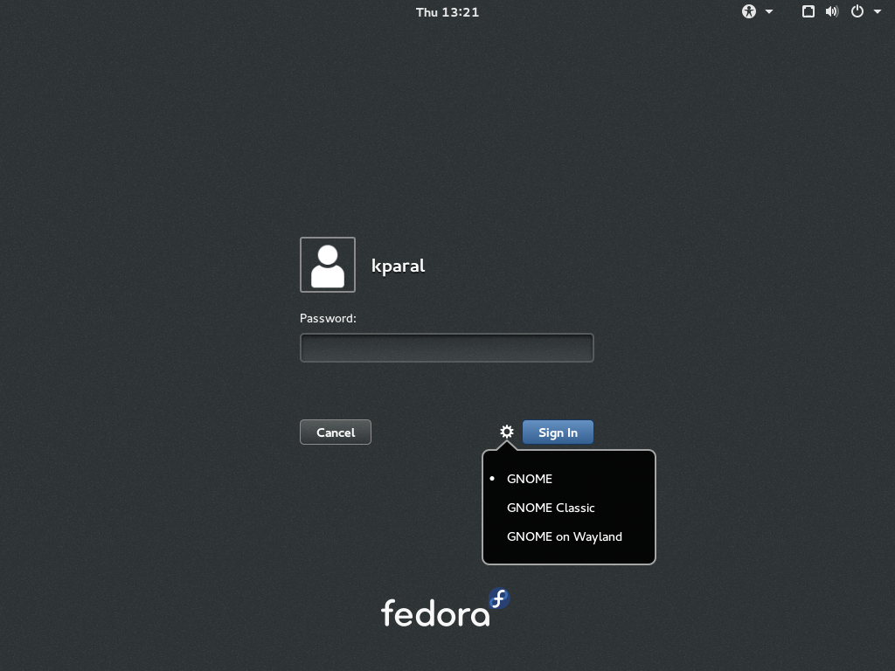
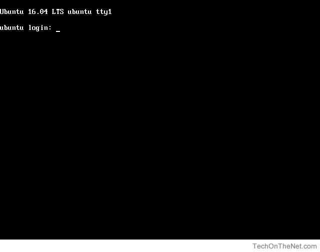

Login? What Is That?¶
Authentication: Prompting The User For Login Data¶
Different login programs
GNOME Display Manager (graphical login)
SSH Daemon (“secure shell”, network login)
getty (console/serial terminal login)
…
Login process verifies that user the is who she claims to be
Username and password
Username and public/private key (see SSH: Public Key Authentication)
Username and token (Kerberos/Active directory)
…
GNOME3 login (gdm) |
Console login ( |
SSH login |
|---|---|---|
|  |  | $ ssh jfasch@192.168.1.147
jfasch@192.168.1.147's password:
|
{kind=link}
{kind=link}
Authentication: Verification Of Login Data¶
Authentication information has been prompted ⟶ username, password (lets stick with the simplest case).
Does the user exist?
$ grep jfasch /etc/passwd jfasch:x:1000:1000:Joerg Faschingbauer:/home/jfasch:/bin/bash
⟶ 👍
(See below for meaning of single fields)
Does the user-supplied cleartext password match the encrypted password?
Note
If field #2 (password) is equal to
x, then the user’s encrypted password can found in/etc/shadow. (Only readable byroot, as a security measure against brute force password cracking attacks.)
And After Successful Authentication?¶
Following successful authentication, the user is being logged in. What does that mean?
User metadata (taken from
/etc/passwd)$ grep jfasch /etc/passwd jfasch:x:1000:1000:Joerg Faschingbauer:/home/jfasch:/bin/bash
Username:
jfaschPassword:
xUID:
1000GID (primary group):
1000(nowadays every user has her own group)Description:
Joerg FaschingbauerHome directory:
/home/jfaschLogin shell:
/bin/bash
I was successfully authenticated ⟶ I want
My configured login shell (
/bin/bash)In my home directory (
/home/jfasch)Running as myself (UID
1000, GID1000, supplementary groups from/etc/groupbtw.)
Impersonation¶
Login process runs as
root- necessary to impersonate as the user⟶ System call
setuid()(or executing a “setuid program”)Only possible for
root“Hey kernel, I don’t want to be
0anymore, let me be1000from now on
As
1000,Change current working directory to
/home/jfaschExecute
/bin/bash
Done
Logged In, Finally¶
Finally, when a user is logged in, they get presented a shell (their login shell).
All commands that they run inherit (Process Hierarchy (Parent, Child Process)) their credentials from their login shell
⟶ UID, GID, (supplementary) groups
To find out who you are, you can use the id command:
$ id
uid=1020(joerg.faschingbauer) gid=1020(joerg.faschingbauer) groups=1020(joerg.faschingbauer),1021(ece20)